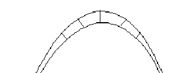
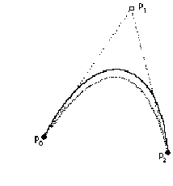
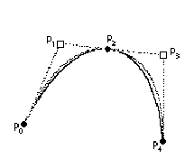
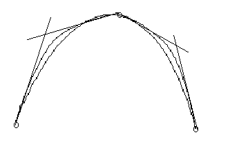

Converting Outlines to the TrueType Format
This section considers some of the issues involved in converting outlines from other outline formats to the quadratic splines supported by the TrueType format.
A key issue in any outline font design is how closely must the curves used to represent a glyph shape resemble the intended glyph design. For designs developed directly in the TrueType format the curves used define the design exactly. A more complex problem arises when converting from some other format or when digitizing a paper design.
Here the problem is one of determining an acceptable error or tolerance value. Once this number is established, conversion becomes merely a matter of finding a set of quadratic curves that describe the original design within the stated tolerance.
While a given curve may not be exactly representable in the quadratic spline format, that curve can always be represented as accurately as required. The tricky parts in this process are determining the degree of accuracy needed and then deciding how to establish whether a given font meets the accuracy guidelines.
How much error is acceptable?
If the possible error in an outline description is less than the error inherent in the most sensitive rendering device expected to be used, none of the attainable accuracy in the typeface design is lost. As a rule of thumb, an error that is less than 1/1000 of the em square will generally meet this guideline.
In attempting to decide whether the chosen error tolerance is acceptable, it is necessaryto look at the output produced. The quality obtained with the letter "s" is often a good indicator of the acceptability of that tolerance, asthere are many curves and transition points.
How to measure error?
There is more than one way to measure the error involved in curve approximation. All of the available methods have associated pitfalls. This book can only suggest some approaches that might be taken and warn against some of the pitfalls.In looking at the original curve and the curve intended to approximate it, it might be tempting to measure the error of approximation by looking at the curve value for each of the two parametric equations specifying the two curves at the same value for t. This method may not work, however, as the two curves will most likely have different velocities making it necessary to reparameterize the two curves in terms of arc length.
In looking at the original curve and the curve intended to approximate it, it might be tempting to measure the error of approximation by looking at the curve value for each of the two parametric equations specifying the two curves at the same value for t. This method may not work, however, as the two curves will most likely have different velocities making it necessary to reparameterize the two curves in terms of arc length.
A better method for determining the error would be to measure the distance for the original curve to the new curve along a perpendicular line as shown in FIGURE 1 below.
FIGURE 1 Measuring the error in a curve approximation

Converting from other formats
If the paper design is digitized directly as quadratic splines the major work of describing outlines in the TrueType format is done. If, however, the art work is digitized as some other type of curve, it will be necessary to convert those curves to quadratic splines.
If you are converting from another format your goal should not be an exact match between the original curves and the new curves. Depending upon the original format, this goal may be impossible to achieve. In addition, an exact match is not necessary to obtain a high quality outline. A more suitable goal is to render the original design with sufficient accuracy that additional efforts toward making the outline more closely resemble the original design will result in no difference in the final output.
From cubics to quadratics
It is possible that the outlines you obtain will be described as cubic curves. If so, it is not possible to perform an exact conversion between the two formats. It is, however, possible to convert the curve descriptions to the degree of accuracy required. That is, you can reduce any error in the translation to an arbitrarily small tolerance.
The paragraphs that follow sketch out a method for converting between these two formats.
- Decompose each contour into "curve sections", that is, units on which it makes sense to replace one kind of curve with another.
- Subdivide each curve at its inflection points.
Inflection point are locations at which the curvature changes direction. Parabolic curves cannot have inflection points, hence curves with inflection points cannot be successfully approximated using quadratic splines. This is not a problem, however, as such curves can be subdivided at their inflection points. - Fit to a selected tolerance.
The goal of this step is to find the smallest (or some number close to the smallest) number of quadratic splines that will approximate the curve with an error factor that is less than the selected tolerance. The method for accomplishing this is to approximate the curve with a single parabola, measure the error, compare that error with the tolerance. If the error is within the tolerance, the fitting is successful. If the error exceeds the tolerance, there is more work to be done.FIGURE 2 illustrates a first attempt at approximating a curve with a quadratic spline.
FIGURE 2 First cut at approximating a curve with a parabola

One method for reducing the error is to employ a process known as recursive subdivision. That is, divide the curve into two portions, fit a quadratic to each of these portions, and check the error against the tolerance. Repeat the subdivision process until the tolerance condition is satisfied. Two possible choices for the location at which you split the curve are the midpoint or the location where the error is largest. FIGURE 3 shows the process of subdividing a curve in an effort to find two quadratic curves that provide a better overall fit to the original curve.
FIGURE 3 Subdividing a curve to reduce the error
Once you have split the curve into two and done the curve fitting, you can optimize the final result (that is minimize the number of quadratics used) by satisfying what is known as the equi-ripple condition. Each of the two curves will have its own error term. It is, however, the maximum of these two error terms that is of concern. By clever choice of the intermediate point you can approximately equalize the two error terms thus reducing the maximum error term.FIGURE 4 illustrates an attempt a minimizing the error term by changing the choice of the intermediate point.
FIGURE 4 Moving the dividing point to equalize the error factor
Given a tolerance there are several approaches that will generate quadratics that match the original cubics to that tolerance. The best approach guarantees that the minimum number of quadratics is used. In general, more quadratics than cubics will be needed to represent a given contour to a specified tolerance. This method will require considerable processing time and is therefore not useful if you need to do on-the-fly conversion.